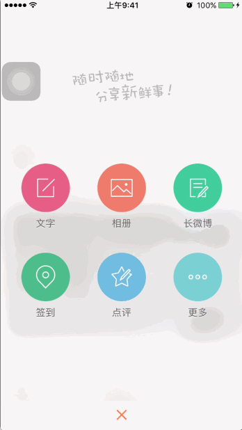

UIImage+ImageEffects.hFacebook 开源的 Pop 框架HMComposeViewclass HMComposeView: UIView {
override init(frame: CGRect) {
super.init(frame: frame)
// 由于当前 View 的特殊性，所以自己指定宽高
self.size = CGSizeMake(SCREENW, SCREENH)
// 设置背景颜色 (为了能展示出来效果)
backgroundColor = UIColor(white: 0.95, alpha: 0.5)
}
required init?(coder aDecoder: NSCoder) {
fatalError("init(coder:) has not been implemented")
}
}
// 在 HMMainViewController 的 viewDidLoad 方法里
let tab = HMTabBar()
//设置撰写按钮点击的事件响应
tab.composeButtonClickBlock = {
print("撰写按钮点击")
let composeView = HMComposeView()
// 获取到屏幕上当前点击的最后一个 window
let window = UIApplication.sharedApplication().windows.last!
window.addSubview(composeView)
}
HMComposeView 的时候消失override func touchesBegan(touches: Set<UITouch>, withEvent event: UIEvent?) {
removeFromSuperview()
}
UIImage+ImageEffects 分类把图片处理成磨砂效果/// 获取屏幕截图
///
/// - returns: 屏幕当前内容
private func getScreenShot() -> UIImage {
// 获取到主window
let window = UIApplication.sharedApplication().keyWindow
// 开启上下文 size： 大小 opaque：是否透明 scale：缩放系数（0：分辨率大小 1：点坐标大小）
UIGraphicsBeginImageContextWithOptions(window!.size, false, 0)
// 把主window的内容画上去
window?.drawViewHierarchyInRect(window!.bounds, afterScreenUpdates: false)
// 获取到当前上下文的图片
let image = UIGraphicsGetImageFromCurrentImageContext()
// 约束上下文
UIGraphicsEndImageContext()
return image
}
// 磨砂背景
private lazy var bgImageView: UIImageView = {
let imageView = UIImageView(image: self.getScreenShot().applyLightEffect())
return imageView
}()
...
private func setupUI(){
// 添加子控件
addSubview(bgImageView)
// 添加约束
bgImageView.snp_makeConstraints { (make) -> Void in
make.edges.equalTo(self.snp_edges)
}
}
// 懒加载控件
private lazy var sloganImage: UIImageView = UIImageView(image: UIImage(named: "compose_slogan"))
// 添加子控件
addSubview(sloganImage)
// 添加约束
sloganImage.snp_makeConstraints { (make) -> Void in
make.centerX.equalTo(self.snp_centerX)
make.top.equalTo(self.snp_top).offset(100)
}
class HMComposeMenuButton: UIButton {
// 重写 highlighted 属性，去掉高亮效果
override var highlighted: Bool {
set{}
get{
return false
}
}
override init(frame: CGRect) {
super.init(frame: frame)
setupUI()
}
required init?(coder aDecoder: NSCoder) {
super.init(coder: aDecoder)
setupUI()
}
private func setupUI(){
// 文字大小
titleLabel?.font = UIFont.systemFontOfSize(14)
// 文字颜色
setTitleColor(UIColor.grayColor(), forState: UIControlState.Normal)
// 设置文字居中
titleLabel?.textAlignment = .Center
// 设置图片显示模型
imageView?.contentMode = .Center
}
/// 重写 layoutSubviews 调整文字与图片的位置
override func layoutSubviews() {
super.layoutSubviews()
// 设置图片位置
imageView?.size = CGSizeMake(self.width, self.width)
imageView?.x = 0
imageView?.y = 0
// 设置文字位置
titleLabel?.x = 0
titleLabel?.y = self.width
titleLabel?.size = CGSizeMake(self.width, self.height - self.width)
}
}
/// 添加子按钮
private func addChildButton(){
// 最大列数
let maxRow: CGFloat = 3
// 按钮的宽与高
let childButtonW: CGFloat = 80
let childButtonH: CGFloat = 110
// 按钮水平方向间隔
let margin = (SCREENW - (childButtonW * maxRow)) / (maxRow + 1)
for i in 0..<6 {
// 初始化按钮
let button = HMComposeMenuButton()
// 设置数据
button.setTitle("文字", forState: UIControlState.Normal)
button.setImage(UIImage(named: "tabbar_compose_friend"), forState: UIControlState.Normal)
// 计算当前 button 在第几行，第几列
let col = i % Int(maxRow)
let row = i / Int(maxRow)
// 设置位置与大小
button.x = CGFloat(col + 1) * margin + CGFloat(col) * childButtonW
button.y = CGFloat(row) * (margin + childButtonW)
button.size = CGSizeMake(childButtonW, childButtonH);
addSubview(button)
}
}
/// 添加子按钮
private func addChildButton(){
...
// 每个 button 要显示的数据
let composetButtonInfos = NSArray(contentsOfFile: NSBundle.mainBundle().pathForResource("compose.plist", ofType: nil)!)!
for i in 0..<composetButtonInfos.count {
// 初始化按钮
let button = HMComposeMenuButton()
// 读取 title 与 icon 数据
let title = composetButtonInfos[i]["title"] as! String
let icon = composetButtonInfos[i]["icon"] as! String
// 设置数据
button.setTitle(title, forState: UIControlState.Normal)
button.setImage(UIImage(named: icon), forState: UIControlState.Normal)
...
}
}
运行测试
show 的方法显示出来/// 将当前 View 显示出来
func show(){
// 获取到屏幕上当前点击的最后一个 window
let window = UIApplication.sharedApplication().windows.last!
window.addSubview(self)
}
...
// MainViewController 中加号按钮点击事件
let tab = HMTabBar()
//设置撰写按钮点击的事件响应
tab.composeButtonClickBlock = {
print("撰写按钮点击")
let composeView = HMComposeView()
composeView.show()
}
// 设置位置与大小
button.y = CGFloat(row) * (margin + childButtonW) + SCREENH
pop 框架到框架，在 Podfile 中添加以下代码pod 'pop'
/// 菜单按钮的集合
private lazy var menuButtons: [UIButton] = [UIButton]()
/// 添加子按钮的时候一并添加到上面定义的集合里面去
for i in 0..<composetButtonInfos.count {
...
addSubview(button)
menuButtons.append(button)
}
show 的时候，执行动画/// 将当前 View 显示出来
func show(){
// 获取到屏幕上当前点击的最后一个 window
let window = UIApplication.sharedApplication().windows.last!
window.addSubview(self)
for (index,value) in menuButtons.enumerate() {
let anim = POPSpringAnimation(propertyNamed: kPOPViewCenter)
// 执行动画
anim.toValue = NSValue(CGPoint: CGPointMake(value.centerX, value.centerY - 350))
// 弹性度
anim.springBounciness = 8
// 弹动速度
anim.springSpeed = 10
// 开始时间
anim.beginTime = CACurrentMediaTime() + 0.025 * Double(index)
// 添加动画
value.pop_addAnimation(anim, forKey: nil)
}
}
运行测试
override func touchesBegan(touches: Set<UITouch>, withEvent event: UIEvent?) {
for (index,value) in menuButtons.reverse().enumerate() {
let anim = POPSpringAnimation(propertyNamed: kPOPViewCenter)
// 执行动画
anim.toValue = NSValue(CGPoint: CGPointMake(value.centerX, value.centerY + 350))
// 弹性度
anim.springBounciness = 8
// 弹动速度
anim.springSpeed = 10
// 开始时间
anim.beginTime = CACurrentMediaTime() + 0.025 * Double(index)
// 添加动画
value.pop_addAnimation(anim, forKey: nil)
}
// 0.3秒之后移除
dispatch_after(dispatch_time(DISPATCH_TIME_NOW, Int64(0.3 * Double(NSEC_PER_SEC))), dispatch_get_main_queue()) { () -> Void in
self.removeFromSuperview()
}
}
运行测试
重复代码抽取
定义枚举，区分动画执行方向
/// 动画执行方向
///
/// - UP: 往上执行
/// - DOWN: 往下执行
enum ComposeMenuAnimType: Int {
case UP = 0
case DOWN = 1
}
/// 执行动画逻辑
///
/// - parameter button: 要执行动画的对象
/// - parameter beginTime: 开始执行动画的时间
/// - parameter type: 执行
private func anim(button: UIButton, beginTime: CFTimeInterval, type:ComposeMenuAnimType){
let anim = POPSpringAnimation(propertyNamed: kPOPViewCenter)
// 执行动画
if type == .UP {
anim.toValue = NSValue(CGPoint: CGPointMake(button.centerX, button.centerY - 350))
}else{
anim.toValue = NSValue(CGPoint: CGPointMake(button.centerX, button.centerY + 350))
}
// 弹性度
anim.springBounciness = 8
// 弹动速度
anim.springSpeed = 10
// 开始时间
anim.beginTime = beginTime
// 添加动画
button.pop_addAnimation(anim, forKey: nil)
}
/// 将当前 View 显示出来
func show(){
// 获取到屏幕上当前点击的最后一个 window
let window = UIApplication.sharedApplication().windows.last!
window.addSubview(self)
for (index,value) in menuButtons.enumerate() {
anim(value, beginTime: CACurrentMediaTime() + 0.025 * Double(index), type: .UP)
}
}
运行测试
// 初始化按钮
let button = HMComposeMenuButton()
button.addTarget(self, action: "composeButtonClick:", forControlEvents: .TouchUpInside)
@objc private func composeButtonClick(button: UIButton) {
UIView.animateWithDuration(0.25, animations: { () -> Void in
for value in self.menuButtons {
value.alpha = 0.0
if value == button {
// 如果是当前点击的button，执行放大
value.transform = CGAffineTransformMakeScale(2, 2)
}else{
// 否则缩小
value.transform = CGAffineTransformMakeScale(0.3, 0.3)
}
}}, completion: { (finish) -> Void in
for value in self.menuButtons {
UIView.animateWithDuration(0.25, animations: { () -> Void in
value.transform = CGAffineTransformIdentity
value.alpha = 1
})
}
})
}
HMComposeViewControllerclass HMComposeViewController: UIViewController {
override func viewDidLoad() {
super.viewDidLoad()
setupUI()
}
private func setupUI(){
view.backgroundColor = UIColor.whiteColor()
navigationItem.leftBarButtonItem = UIBarButtonItem.item(title: "返回", target: self, action: "back")
}
@objc private func back(){
dismissViewControllerAnimated(true, completion: nil)
}
}
HMMainViewController 控制器传入// 定义属性
var target: UIViewController?
// 更改 show 方法
func show(target: UIViewController){
self.target = target
...
}
...
// 外界通过 show 这个方法传入
let composeView = HMComposeView()
composeView.show(self)
@objc private func composeButtonClick(button: UIButton) {
UIView.animateWithDuration(0.25, animations: { () -> Void in
...
}}, completion: { (finish) -> Void in
let controller = HMNavigationController(rootViewController: HMComposeViewController())
self.target?.presentViewController(controller, animated: true, completion: { () -> Void in
self.removeFromSuperview()
})
})
}
运行测试：发现并没有看到从下往上弹出的效果，原因控制器是在
composeView的下面弹出的，所以分析之后，需要把composeView添加到HMMainViewController的 view 上
/// 将当前 View 显示出来
func show(target: UIViewController){
self.target = target
// 添加到传入的控制器身上
target.view.addSubview(self)
for (index,value) in menuButtons.enumerate() {
anim(value, beginTime: CACurrentMediaTime() + 0.025 * Double(index), type: .UP)
}
}